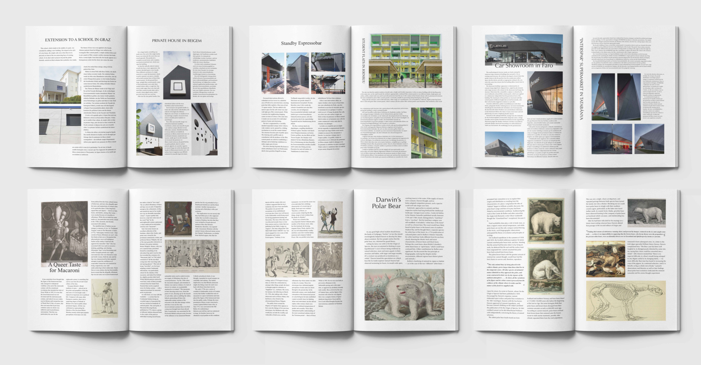
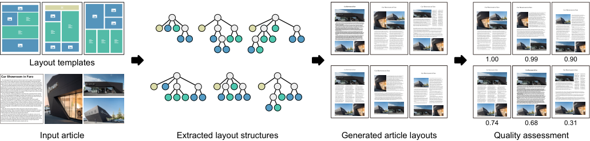
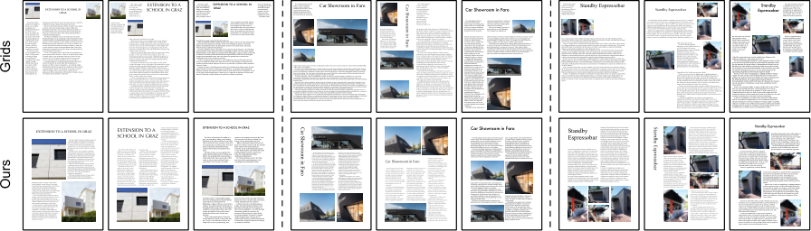
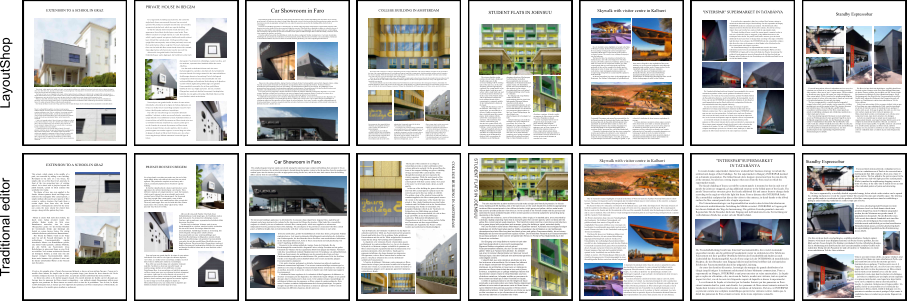
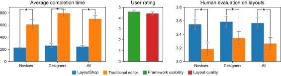

LayoutShop
Content-Constrained Exploratory Design of
Creative Article Layout
CSSE, Shenzhen University, China
Pacific Graphics 2026
Abstract
We present LayoutShop, a novel computational framework for designing creative layouts that frame a given article. Inspired by the actual article layout design process, we enable users to create or select layout templates for conceptualization. These templates help construct a layout design space to extract eligible layout structures. Our algorithm then determines the geometry of the extracted layout structures to frame the given article via an optimization approach. We then employ two neural networks for layout assessment, and the high-quality outputs are returned to users for selection. We conducted a user study to evaluate the framework’s usability and the quality of the article layouts it produces. The results of the user study confirmed that our framework can effectively help users create high-quality article layouts.

Method
Starting from an article and user-created or selected templates, LayoutShop combines the templates into a design space and extracts candidate structures that meet the article’s requirements. It then optimizes each structure’s geometry to fit the text and illustrations while respecting alignment, spacing, and other layout constraints. Two neural networks assess visual appearance and structural rationality, filtering out unsuitable candidates. Users browse the resulting layouts, select a preferred design, and refine it with interactive editing tools. The same workflow supports both single-page and multi-page articles.

Experiments
We evaluated LayoutShop through a comparison with GRIDS and two user studies. Given the same articles, LayoutShop produces more reasonable and visually pleasing layouts by combining template-guided structures with article-specific design constraints.

In Study I, six novices and six designers created 48 layouts from eight real articles using LayoutShop and traditional editors. The examples below compare the layouts produced in the two conditions.

Average completion time decreased from 702 to 245 seconds, and participants rated usability at 4.6 out of 5. In Study II, 100 participants rated the resulting layouts: LayoutShop received higher average quality scores than traditional editors (3.57 versus 3.27 out of 5). The improvement was statistically significant for both novice-created and designer-created layouts.
